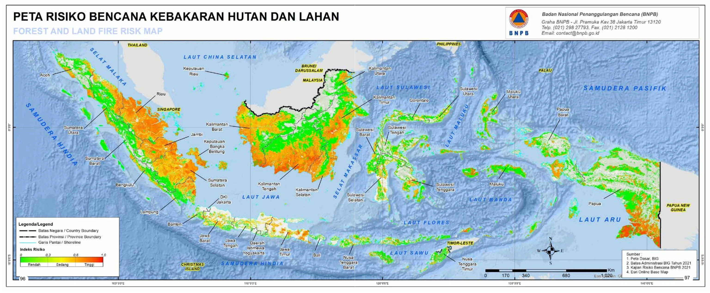
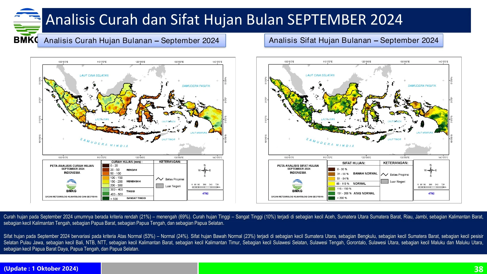
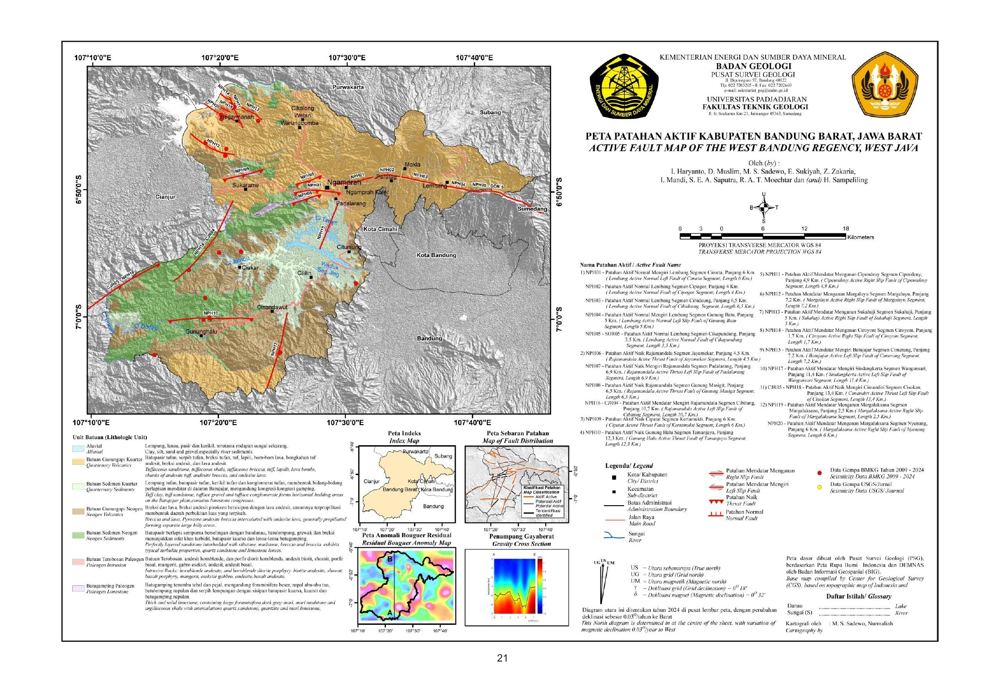

Data kualitatif
Menjawab pertanyaan jenis apa? atau termasuk kategori mana? Contoh: jenis tanah, fungsi bangunan, penggunaan lahan, dan tipe ekosistem.
Metode pemetaan harus mengikuti makna data. Data kategori digunakan untuk membedakan jenis, sedangkan data numerik digunakan untuk memperlihatkan jumlah, rasio, urutan, atau perubahan.
Menjawab pertanyaan jenis apa? atau termasuk kategori mana? Contoh: jenis tanah, fungsi bangunan, penggunaan lahan, dan tipe ekosistem.
Menjawab pertanyaan berapa banyak?, seberapa besar?, atau berapa tingkatnya? Contoh: jumlah penduduk, kepadatan, curah hujan, dan indeks risiko.
| Metode | Data yang sesuai | Pertanyaan utama |
|---|---|---|
| Simbol kategori | Nominal | Jenis objek apa yang terdapat di lokasi tersebut? |
| Choropleth | Rasio, persentase, tingkat, atau kepadatan per unit area | Wilayah mana yang relatif lebih tinggi atau rendah? |
| Simbol proporsional | Jumlah atau besaran | Lokasi mana yang memiliki jumlah lebih besar? |
| Dot density | Jumlah yang didistribusikan dalam area | Bagaimana pola sebaran fenomena di dalam wilayah? |
| Isoline/isopleth | Fenomena kontinu | Bagaimana perubahan nilai pada permukaan? |
| Diagram pada peta | Beberapa komponen numerik | Bagaimana komposisi atau perbandingan di tiap lokasi? |
Contoh: jumlah penduduk atau jumlah kasus. Cocok ditampilkan menggunakan ukuran simbol karena nilai menyatakan total.
Contoh: penduduk per km² atau persentase rumah tangga. Cocok untuk peta koroplet karena nilai telah mempertimbangkan penyebut.
Choropleth tidak digunakan untuk jumlah absolut jika ukuran unit wilayah sangat berbeda. Wilayah luas dapat terlihat dominan meskipun kepadatan atau proporsinya rendah.



Metode klasifikasi dapat mengubah pola visual. Batas kelas, jumlah kelas, satuan, tahun data, dan sumber harus dinyatakan dalam legenda atau keterangan peta.
| Skema | Makna | Contoh |
|---|---|---|
| Kualitatif | Perbedaan kategori tanpa urutan. | Jenis penggunaan lahan atau formasi geologi. |
| Sekuensial | Urutan nilai dari rendah ke tinggi. | Kepadatan, persentase, atau indeks risiko. |
| Divergen | Dua arah perubahan dari nilai tengah yang bermakna. | Perubahan negatif–positif atau nilai di bawah–di atas rata-rata. |
Palet warna dipilih setelah makna data ditentukan. Pemeriksaan keterbacaan dilakukan pada layar dan cetak, termasuk untuk pembaca dengan gangguan penglihatan warna.
| Pertanyaan | Data | Metode utama | Hal yang diperiksa |
|---|---|---|---|
| Jenis apa? | Nominal | Simbol kategori atau area kelas | Warna/bentuk cukup berbeda |
| Berapa jumlahnya? | Jumlah absolut | Simbol proporsional | Ukuran berdasarkan luas simbol |
| Seberapa tinggi relatif? | Rasio, persen, kepadatan | Koroplet | Normalisasi dan batas kelas |
| Bagaimana permukaannya? | Nilai kontinu | Isoline atau permukaan warna | Metode interpolasi dan ketidakpastian |
| Ke mana bergerak? | Asal–tujuan | Peta aliran | Arah, lebar garis, dan tumpang tindih |